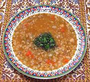

|
Red Lentil & Wheat SoupTurkey - Kurdish | ||||
| Makes: Effort: Sched: DoAhead: |
7 cups *** 2-1/4 hr Yes |
This is a Kurdish version of a soup very popular in Turkey, It's easy to make, and is both substantial and vegetarian. For other versions see Red Lentil & Mint Soup and Red Lentil & Bulgur Soup. | |||
|
|
1 1/2 2/3 ------- 6 4-1/2 5 4-1/2 ------- 8 1-1/2 2 1/2 ------- 1 1/4 1/2 1/8 2 ------- |
c c c --- oz oz oz oz --- c T T --- t t t t T --- |
Red Lentils Wheat, pelted (1) Chickpeas, canned -- Vegies Onions Celery Carrots Frying Peppers (2) ------- Water Tomato Paste Red Pepper, dry (3) Salt -- Aromatics Mint, dried Aleppo Pepper (4) Pepper Safflower (opt) Butter -------------- |
Prep - (35 min)
|